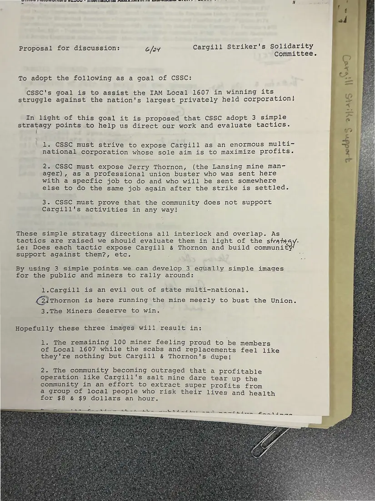

Proposal, 1 page
“Proposal for discussion”: three strategy points for the Cargill solidarity campaign
June 24, [1986]Date inferred
A proposal dated 6/24 that the committee adopt one goal (helping IAM Local 1607 win) and three images: Cargill as an evil out-of-state multinational, the mine manager as a union buster, and miners who deserve to win. It explains how each tactic should serve them.
Download or cite this itemPages


(open zoom view)Read the page text (machine-read, mostly readable)
This text was generated automatically from the photograph and has not been corrected. The image is the authoritative record.
er SEN |S A OU NF Fe I~ EPC ETL) LG PALE Ree eee See > if Proposal for discussion: G/a¥ Cargill Striker's Solidarity Committee. = C Lome To adopt the following as a goal of CSSC: ez. Ge CSSC's goal is to assist the IAM Local 1607 in winning its * struggle against the nation's largest privately held corporation! a“ In light of this goal it is proposed that CSSC adopt 3 simple * we stratagy points to help us direct our work and evaluate tactics. b, te | i 4 gee 1. CSSC must strive to expose Cargill as an enormous multi- j ~> é national corporation whose sole aim is to maximize profits. 2 iB 2. CSSC must expose Jerry Thornon, (the Lansing mine man- j Pie. ager), as a professional union buster who was sent here ) 1a with a specfic job to do and who will be sent somewhere else to do the same job again after the strike is settled. 3. CSSC must prove that the community does not support Z Cargill's activities in any way! These simple stratagy directions all interlock and overlap. As tactics are raised we should evaluate them in light of the stvaty i ie: Does each tactic expose Cargill & Thornon and build soe SuppOTtragainst them?, etc. *e By using 3 simple points we can develop 3 equally simple images for the public and miners to rally around: 1.Cargill is an evil out of state multi-national. (24 Thornon is here running the mine meerly to bust the Union. 3.The Miners. deserve to win. Hopefully these three images will result in: 1. The remaining 100 miner feeling proud to be members of Local 1607 while the scabs and replacements feel like Fi they're nothing but Cargill & Thornon's dupe! Me Ses 2. The community becoming outraged that a profitable operation like Cargill's salt mine dare tear up the community in an effort to extract super profits from a group of local people who risk their lives and health for $8 & $9 dollars an hour. = onaieeeomeeageia es ean eee nn Se Rees, I I ee eel 1 twtr. ame
See something wrong, or recognize a person or event? Send a correction. If you hold rights in this item or think it should not be public, write to the same address.